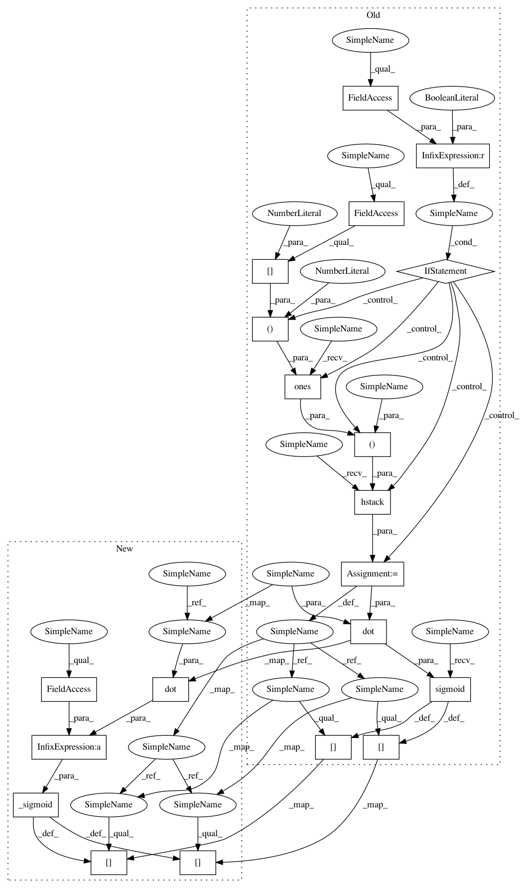

aab7d40abb603c471132703e205148a8a87fe10b,costcla/models/regression.py,CostSensitiveLogisticRegression,predict_proba,#CostSensitiveLogisticRegression#,217
Before Change
def predict_proba(self, x_test):
//Calculate the prediction of a LogRegression
if self.intercept == True:
x_test = np.hstack((np.ones((x_test.shape[0], 1)), x_test))
p = np.zeros((x_test.shape[0], 2))
p[:, 1] = self.sigmoid(np.dot(x_test, self.theta))
p[:, 0] = 1 - p[:, 1]
return p
def predict(self, x_test, cut_point=0.5):
After Change
T : array-like, shape = [n_samples, 2]
Returns the probability of the sample for each class in the model.
y_prob = np.zeros((X.shape[0], 2))
y_prob[:, 1] = _sigmoid(np.dot(X, self.coef_) + self.intercept_)
y_prob[:, 0] = 1 - y_prob[:, 1]
return y_prob
def predict(self, X, cut_point=0.5):
In pattern: SUPERPATTERN
Frequency: 3
Non-data size: 20
Instances
Project Name: albahnsen/CostSensitiveClassification
Commit Name: aab7d40abb603c471132703e205148a8a87fe10b
Time: 2014-08-17
Author: al.bahnsen@gmail.com
File Name: costcla/models/regression.py
Class Name: CostSensitiveLogisticRegression
Method Name: predict_proba
Project Name: albahnsen/CostSensitiveClassification
Commit Name: aab7d40abb603c471132703e205148a8a87fe10b
Time: 2014-08-17
Author: al.bahnsen@gmail.com
File Name: costcla/models/regression.py
Class Name: CostSensitiveLogisticRegression
Method Name: predict_proba
Project Name: albahnsen/CostSensitiveClassification
Commit Name: cbdd0d6690f9bf014ed428022dfda67be4b779f2
Time: 2014-08-17
Author: al.bahnsen@gmail.com
File Name: costcla/models/regression.py
Class Name: CostSensitiveLogisticRegression
Method Name: predict_proba
Project Name: albahnsen/CostSensitiveClassification
Commit Name: ef8da66de9810b546451ced8c3f959ff193c6ce0
Time: 2014-08-17
Author: al.bahnsen@gmail.com
File Name: costcla/models/regression.py
Class Name: CostSensitiveLogisticRegression
Method Name: predict_proba